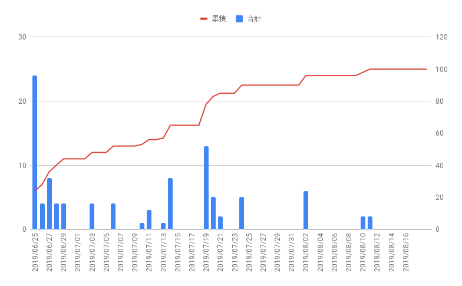
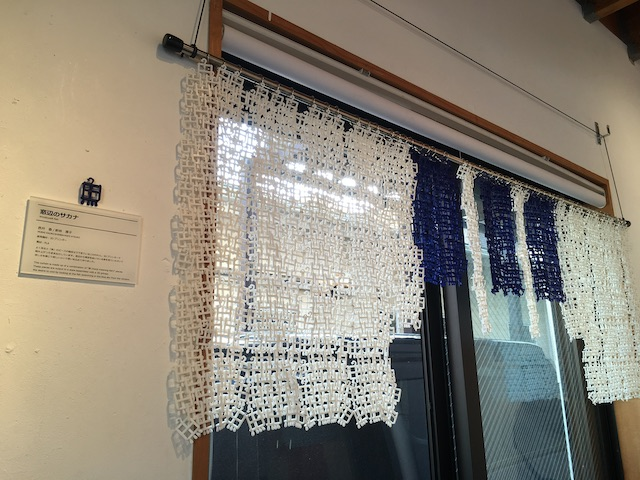
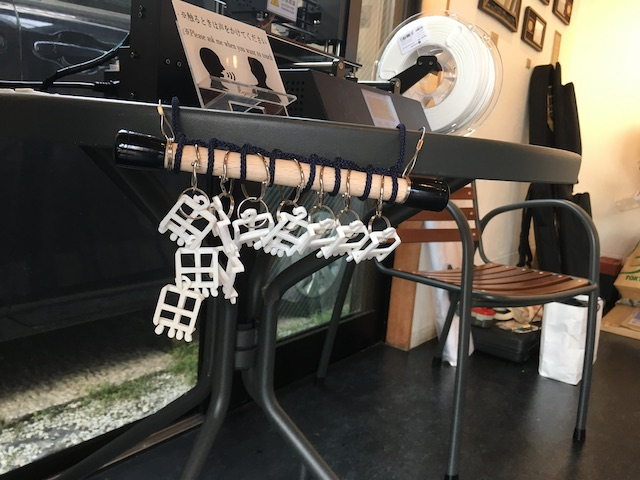

累積グラフグラフ

最終的には１００ピース完成しました。
実際に使用したのピース：大きいピース４０個、小さいピースが３４個（青18、白16）＜破損や予備、作品全体のバランスを元に決定＞
その他：リング108個（上の部分）、リング（ピース同士をつなげる部分）、棒（直径1.5cm×1.8m）、釘、金具、紐

実際に展示された作品の写真になります。
作品のデータは次のリンクからダウンロードが可能です。
鎖
1ピース
またリアルタイムで３Dプリンターを動かす企画もしました。
実際に稼働していると足を止めて見ていくお客さんが多かった。
完成するのに５分ほどかかるが最初から最後まで見てくお客さんもいた。
完成したピースはプリンターの横に展示したがもう少し工夫が必要だと感じた。
暖簾と同じデータで作っていたが、もう少し素早く完成して（３分くらい）、繋がったものが出せたらもっと驚きを生み出せたに違いない。
タイムマネージメントが悪く、もう少し実験を重ねる時間が不足した。

７月２７日に‘FUSION ３６０ Academy ２０１９’というイベントに参加しました。
このイベントではFUSION360というソフト活用し、機能などの使い方を教える教室やソフトを活用した作品や製品造りの発表が行われた。
私が受けた授業は次の３つだ。
１、ジェネレーティブデザイン実践編。
２、解析機能の使い方。
３、FUSION360を活用したメカ、ロボット作り。
それぞれの詳細について現在インターンネット公開は制限されているので今回は一旦そのまとめを保留しておく。公開され次第まとめていきたい。
イベント情報
物自体を作る研究。
デジタルファブリケーションの使い方をマスターしながら自分が作れるものの幅を増やしたい。
前期の目標であったレシピ作り等に関連する項目を取り扱いたい。
デザインの手法としてまだ出たばかりであるこの手法を研究して、デザインに新しい可能性をもたらせないか可能性を試したい。
人とものづくりの関わりに関する研究。最近ではDIYなど自分でものを作る人が話題だが、それでもものづくりを楽しむ人口はまだ限られていると思う。
そこで歴史的な背景や現代の状況を観察したりすることを通じてものづくりの楽しさを人に伝えられる方法はないか探っていきたい。
・ジェネレーティブデザインの実践・結果報告
・ホームページの更新